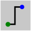

Инструмент разводки
Инструмент разводки предназначен для прокладки проводников, которые передают логические сигналы между
компонентами схемы.
Особенности работы проводников
- Цветовая индикация разрядности: Разрядность проводника автоматически определяется компонентами, к
которым он подключён.
- Серый цвет: Разрядность неизвестна (проводник ни к чему не подключён).
- Оранжевый цвет: Конфликт разрядностей. Компоненты на концах имеют разную разрядность,
передача значений заблокирована до устранения ошибки.
- Ортогональность: Все проводники прокладываются строго по горизонтали или вертикали. Диагональных
линий в Logisim не бывает.
- Двунаправленность: Проводники не имеют заданного направления сигнала и могут передавать его в любую
сторону. Более того, один проводник может передавать сигналы в разных направлениях одновременно. На примере
ниже бит поступает с левого верхнего входа, проходит по центральному проводнику, возвращается обратно и
снова идёт вперёд по тому же проводнику:

Прокладка и редактирование сегментов
- Авто-сегментация: При прохождении новой линии через контакты компонентов или концы существующих
проводников она автоматически разбивается на отдельные сегменты. Т-образные пересечения также разрезают
существующий проводник на части.
- Укорачивание: Чтобы укоротить существующий проводник, захватите Инструментом разводки его конец и
потяните мышь в обратном направлении (вдоль самого сегмента).
- Авто-коррекция: Для компонентов с короткими выводами-«заглушками» (например, Элемент ИЛИ и Управляемый буфер),
Logisim автоматически корректирует небольшие промахи курсором при подключении.
Поведение Инструмента «Нажатие»
Щелчок Инструментом «Нажатие» по существующему проводнику выводит на экран текущее логическое значение,
проходящее
через него. Это особенно полезно для диагностики многоразрядных шин, стандартный чёрный цвет которых не даёт
визуальной информации о передаваемом сигнале.
Примечание: Формат отображения многоразрядных значений (двоичный, десятичный, шестнадцатеричный и т.д.)
можно настроить в параметрах проекта на вкладке .
Назад к Инструментам